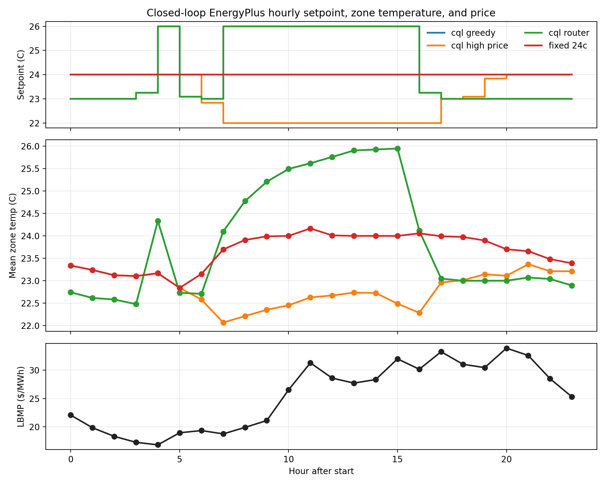
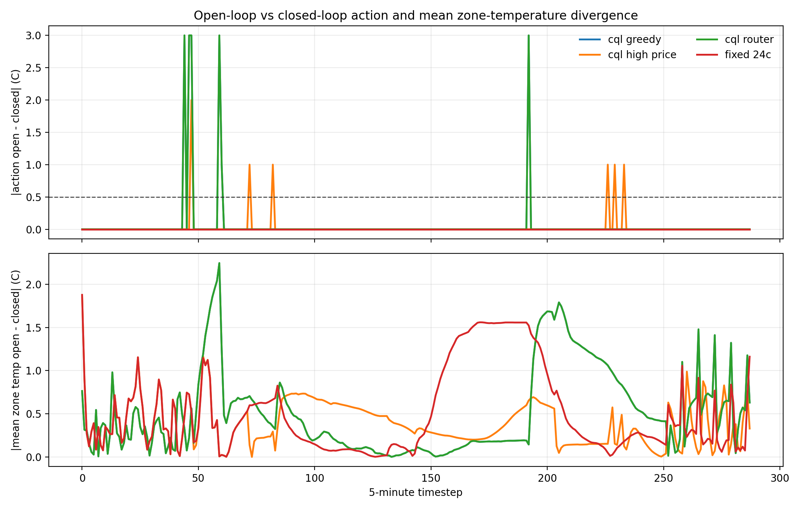

A fixed 24 °C setpoint beat my reinforcement learner
Offline reinforcement learning for price-responsive cooling control, evaluated at three levels of fidelity. The learned policy that looked best in open-loop replay lost to a constant setpoint once its actions could feed back into the building.
The same policies, judged three ways
Each stage removes one source of open-loop optimism. Only the middle stage misleads, and it is the one most projects stop at.
Cheaper, less faithfulCloser to deployment
Learned dynamics model
Policies rolled forward 2, 4 and 8 hours through a one-step dynamics model, from four daily starts over all 365 days.
Fixed 24 °C and CQL leadFixed wins at 2 and 8 hours, CQL at 4, at every comfort weight tested. CQL-HP and the router degrade as the horizon grows.
Open-loop EnergyPlus replay
Each policy's actions become a setpoint schedule run in the real simulator, but the policy never sees the result of its earlier actions.
CQL-HP looks like the winnerDaily comfort penalty 84.6 against 147.8 for the fixed setpoint, more than offsetting $9.64 a day of extra cost.
Closed-loop EnergyPlus replay
True zone temperatures are read back into the state every five minutes, and the policy acts on them.
Fixed 24 °C winsLowest mean cost and comfort penalty across 18 cooling-active episodes. CQL-HP is now the most expensive policy.
What was built
You cannot run online RL against an occupied building, so the policy has to be learned from logged data and trusted before it touches a thermostat.
ASHRAE 90.1 medium office in New York, 15 zones, a year of EnergyPlus simulation at 5-minute steps to match NYISO's real-time price updates.
523,775 transitions from five logged behavior policies (baseline, comfort-biased, cost-shed, pre-cooling), merged with 2023 NYISO Zone J prices and split by day into summer, winter, shoulder and high-price test sets.
One cooling setpoint between about 21 and 26.5 °C for all zones. Reward trades electricity cost against an occupancy-gated comfort penalty.
Fixed 24 °C, a discrete-action CQL agent, CQL-HP tuned on high-price windows, and CQL-Router, a hand-written safety layer that sheds load when prices spike and recovers when zones get warm.
Stage 3 ran 23 episodes (all summer and high-price test days plus a hot day, one winter and one shoulder day), 18 of them with cooling active.
Closed-loop results
Fixed 24 °C had the lowest comfort penalty outright in 12 of 18 episodes and tied at zero in 5 more. It was never worst on its own.
| Policy | Mean cost | Median cost | Mean comfort penalty | Median comfort penalty |
|---|---|---|---|---|
| Fixed 24 °C | $84.68 | $76.53 | 2.25 | 0.00 |
| CQL | $86.15 | $77.23 | 14.26 | 5.17 |
| CQL-Router | $90.45 | $77.56 | 77.15 | 39.06 |
| CQL-HP | $98.79 | $90.21 | 48.91 | 11.47 |
| CQL-Router, after fix | $85.67 | n/a | 12.95 | n/a |
Two different ways to fail
The router: right forecast, wrong control logic
CQL-Router's open-loop comfort prediction matched closed-loop reality on 16 of 18 episodes, yet it had the worst realized comfort in 9 of them. The problem was the recovery branch, written as the minimum of CQL-HP's action and 24 °C. CQL-HP usually wants something colder than 24, so the cap never engaged and every recovery swung the setpoint from 26 down to about 22 °C.
Pinning the branch at its configured value and re-running the validation unchanged cut the router's comfort penalty 6×, from 77.15 to 12.95, level with plain CQL. The headline held: Fixed 24 °C was still best outright in 10 of 18 episodes and still never worst.
CQL-HP: the forecast itself was wrong
CQL-HP under-predicted its own realized comfort penalty on 12 of 18 episodes, by 67.4 penalty units on average when it missed. On the illustrative hot day it predicted almost zero and realized 303.7.
A shared trigger
Both failures trace to ties in the discrete argmax that occasionally flip the chosen setpoint. On the hot day, the learned policies diverged from their open-loop actions on only 6 of 288 steps, but each divergence opened a zone-temperature gap of up to 2.25 °C that persisted for tens of steps.


The contribution isn't an algorithm. It's that open-loop evaluation, the usual way these controllers get validated, can certify a policy that raises both cost and comfort violations once deployed. Closed-loop simulator validation should be the minimum bar before claiming a demand-response benefit.
PyTorchConservative Q-LearningOffline evaluationEnergyPlusNYISO market data
Where it stands
Last updated September 2026.
- Offline dataset, four policies, and the three-stage evaluation pipeline
- Router recovery defect found, fixed, and re-validated
- Robustness checks: ranking stable across comfort weights 1 to 20
- Paper submitted
- Tackling Climate Change with ML workshop at NeurIPS 2026
- Continuous-action offline RL (TD3+BC, IQL) through the same three stages, to test whether removing the argmax tie removes the divergence
- A sequence model in place of the one-step dynamics model at stage one
- A closed-loop harness where weather, occupancy and schedules also respond, not only zone temperature
The evaluation pipeline will be released with the paper after the review period.